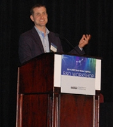

Two hundred researchers, manufacturers, and other industry insiders and observers gathered in Tampa, FL, January 28–30, 2014, to participate in DOE's 11th annual Solid-State Lighting (SSL) R&D Workshop. DOE SSL Program Manager James Brodrick kicked off Day 1 by reminding attendees that it takes time to achieve market adoption, and that "we're still early in the game." He emphasized that the true value of SSL has yet to be "mined" by the industry, and pointed out that the technology has the potential to be far more than a commodity in the old lighting paradigm. Brodrick predicted that SSL's value-added features will drive adoption, and noted that smart-lighting options can significantly increase the energy savings.
SSL's Next Frontier
Brian Chemel of Digital Lumens prophesied that the future of lighting is "digital, networked, personalized, energy-aware, and responsive." He exploded a number of popular industry myths about LEDs, such as that they're becoming so cheap so quickly that the SSL revolution is inevitable. The reality, Chemel said, is that the cost of the rest of the lighting system already dominates, which means there's still much work to do to match the initial cost of incumbent technologies. As to the claim that ever-increasing LED efficacy will overwhelm incumbent technologies, he noted that most of the possible efficacy gains have already been achieved over the past decade. Chemel predicted that intelligent SSL will unlock new markets in multiple sectors by enhancing mood, health, comfort, productivity, and safety with its value-added features.
The Evolution of Adoption
Brad Koerner of Philips Lighting urged manufacturers not only to reduce the amount of "junk" in SSL products by simplifying them as much as possible, but also to shrink the size of fixtures by abandoning preconceived notions based on earlier technologies, and to "go deep green" by using earth-friendlier materials. He said that customers will hold the lighting industry accountable for lifecycle costs, which essentially adds to manufacturing costs, so manufacturers would do well to design products with that in mind rather than focusing only on efficacy and initial cost. Koerner pointed out that to a large extent, today's fixtures reproduce formats that date back to the gaslight era. Instead of creating highly efficient fixtures that wind up in the junkyard, he urged manufacturers to create a material bank for future generations to reclaim value.
Science Challenges
A panel of speakers, moderated by Morgan Pattison of SSLS, Inc., discussed fundamental science challenges that still need to be overcome if SSL is to achieve its full potential. Nathan Gardner of Glo-USA shared his views on addressing the green gap. He reviewed the different approaches that have been taken and the issues that have arisen with each approach. Gardner noted that using AlInGaP semiconductors has become a "dead end" for green, and that the decrease in efficiency using InGaN semiconductors is due to increased Auger recombination and strain-induced alloy non-uniformity as the indium content is raised. Using a nonpolar crystal orientation has been considered as a possible solution, and Gardner discussed the use of nanowires as a way to control the strain.
Claude Weisbuch of the University of California Santa Barbara gave his perspective on the droop phenomenon. Calling current efficiency droop "the main limiting factor in SSL," he considered why present techniques don't allow for the identification of the mechanism underlying the phenomenon, and questioned the applicability of the traditional ABC model. Weisbuch explained that inhomogeneity of carrier densities and non-uniformity of alloy composition result in huge variations and uncertainties in ABC-extracted parameters for similar materials, because of different LEDs' active layer designs and contact geometries. He discussed how using the electron emission technique shows that Auger recombination is responsible for droop. This understanding can help pave the way for methods to mitigate the phenomenon.
Julian Osinski of Pacific Light Technologies discussed the potential advantages of using quantum dot downconverters instead of traditional phosphors. He explained that quantum dot size can be controlled very accurately, and the size determines the emission wavelength, which means the wavelength can also be controlled. Osinski noted that quantum dots have narrow emission peaks (<35 nm), with fast radiative lifetimes that help sustain high intensities. In addition, he said, quantum dots can have very high efficiencies and can disperse uniformly within a matrix such as silicone, making them completely transparent and non-scattering. Osinski said that although there are many challenges in using quantum dots for SSL, they have the potential to significantly increase efficacy, customize the spectrum, and achieve higher CRIs.
Day 1 concluded with an optional bus tour of Tampa LED lighting installations. The first stop was the Tampa Convention Center, where exhibit hall lighting had been converted to LED high-bay luminaires, and art and decorative elements were lit by LED spotlights using DMX controls. The center's concourse, which had formerly been lit by 375 metal halide fixtures, dropped from 201 to 39 watts per LED fixture, for an annual energy savings of about 80 percent, or $23,000. The second stop on the tour was Tampa General Hospital, which had installed LED lighting in outdoor locations and parking garages, and more recently, had begun converting selected indoor applications, including 2'x2' and 2'x4' troffers, cove and track lights, and surgical high-intensity lighting. Senior electrical engineer Jose Marotta explained that under the new LED surgical lights, the operating tables are 10° cooler than under the formerly used halogen lights. The final tour stop was a Yogurtology franchise, where Kyle Nelson, of lighting solutions provider LumaStream, discussed the structural challenges posed by the building having formerly been a bank, and how driverless LED fixtures (downlights, accent lights, and 2'x2' troffers) with low-voltage power supplies were chosen to illuminate the store. He explained that the site uses a centralized power supply for digital power conversion, constant current drivers, and seamless dimming control, and power and control signals are transmitted via speaker wire to the LED lighting.
DOE SSL R&D Update
Day 2 began with Brodrick presenting an overview of DOE SSL R&D portfolio funding and current areas of focus. He pointed out that DOE has funded more than 200 SSL R&D projects since 2003, resulting in more than 180 patents, and observed that in 2012, LED lighting saved 71 tBtu – equivalent to annual energy cost savings of roughly $675 million. Brodrick reviewed DOE-funded SSL R&D highlights for fiscal year 2013, and noted that DOE's funding opportunity announcement for fiscal year 2014 covers core technology research, product development, and manufacturing R&D. He emphasized the importance of attendee input to guide updates to the DOE SSL Multi-Year Program Plan (MYPP), which is used to develop DOE solicitations, and said that despite the impressive progress in SSL to date, much still remains to be done.
Color Quality
Yoshi Ohno of the National Institute of Standards and Technology (NIST) received special recognition from Brodrick for his many contributions to our understanding of the color quality of light. Ohno then discussed the color quality of SSL sources. He gave an overview of the work he and his colleagues at NIST have done, including leading the development of the standards IES LM-79, ANSI C78.377, and the forthcoming IES LM-85, as well as the Color Quality Scale, which is an alternative to the Color Rendering Index. Ohno then gave an account of his latest research on white light chromaticity, which suggests that in order to develop SSL products that customers prefer, we should think outside the black body curve. This research needs verification in the field, but it suggests that some LEDs currently rejected by manufacturers could still be used.
Enabling Innovation in Luminaire Design
Stephen Blackman of Blackjack Lighting speculated that OLED panels could become the next type of multi-use "light bulb," eventually replacing the edge-lit LED panels that are already making significant inroads and that may be paving the way for OLED success. He made the point that because OLEDs emit an even distribution of light in one direction, they're especially good at "back-against-the-wall" types of applications such as wall sconces and ceiling fixtures. Blackman noted that improvements are needed in price, efficacy, and lifetime for OLEDs to gain market acceptance, and standardized sockets and mechanical connectors would promote their use by luminaire manufacturers. He called edge-lit LED panels a transitional form and predicted that OLEDs would eventually eclipse them as small flat-panel light sources.
Related Government-Supported SSL R&D
Joel Chaddock of National Energy Technology Laboratory highlighted the central role the DOE SSL program plays in guiding many related government-supported SSL R&D efforts. As a preview to the evening poster session, he offered an overview of the DOE SSL program elements, including Core Technology Research, Product Development, Manufacturing R&D, and Market Development Support. He then described several additional DOE-funded efforts related to SSL R&D, including projects funded under the DOE Small Business Innovation Research (SBIR) program, the Advanced Research Projects Agency–Energy (ARPA-E), the Advanced Manufacturing Office (AMO), and the Energy Frontier Research Centers (EFRCs). Steven Konsek of the National Science Foundation (NSF) then gave a brief presentation on the NSF's SBIR/Small Business Technology Transfer (STTR) program, which provides seed funding for high-risk, high-reward private-sector ventures.
Later that evening, researchers representing projects funded by the DOE SSL program, SBIR/STTR, ARPA-E, AMO, and EFRCs presented their work at the poster session and reception sponsored by the Next Generation Lighting Industry Alliance (NGLIA), providing attendees with additional opportunities for discussion, information exchange, and potential partnering.
Planning for Action
Fred Welsh of Radcliffe Advisors reviewed the workshop process of splitting up into separate LED and OLED track sessions on Days 2 and 3 to discuss priority tasks that address key SSL barriers. These discussions will help update DOE's MYPP and guide DOE planning for R&D solicitations. Welsh explained that the track sessions have been restructured to facilitate more focused discussions on critical topics for LEDs and OLEDs. Although DOE's ultimate goal is energy efficiency, which requires widespread adoption, he emphasized that source efficacy is not the end of the story, because luminaire efficiency includes other system components such as drivers and optics. Welsh pointed out that cost is only one factor affecting adoption, and that features such as controllability can also make a big difference. He said that added value from such features can help prevent commoditization.
LED Track Sessions
The LED track sessions were introduced by Steve Bland of SB Consulting. Wouter Soer of Philips Lumileds discussed the challenges of meeting DOE's 2020 package efficacy target of 250 lm/W, comparing the three main architecture approaches: direct-emitting, phosphor-converted, and hybrid. Based on the efficacy projections, phosphor-converted and hybrid LEDs are well positioned to meet the target, with hybrid LED products the best solution for color tuning applications.
A panel moderated by Bland featured Paul Fini of Cree, Steve Lester of Toshiba, Julian Osinski of Pacific Light Technologies, and Soer exploring future trends in LED packaging and integration. They considered issues associated with the characterization of emerging packaging technologies and how such packages have evolved to optimize system efficacy. They also discussed the impact of LED substrate choice on packaging methodology, as well as the incorporation of advanced downconverter materials and the prospects for higher levels of integration. GaN substrates could improve droop, facilitate high current density operation, and enable good light extraction, but they're expensive and there's no preexisting supply chain. GaN on silicon reduces cost, enables new architectures, and makes use of existing manufacturing infrastructure, but there are significant lattice and thermal-expansion mismatches. Quantum dot downconverters can improve the color quality and efficacy of phosphor-converted LEDs by creating a narrower emission spectrum to minimize infrared waste.
Eric Haugaard of Cree reviewed the evolution of LED luminaires; described what a highly integrated, consolidated, and higher-value LED luminaire might look like in the future; and considered what research is needed to reach that stage. He noted that control technology has a significant influence on product evolution, and that, for example, an LED array with sensors – capable of detecting heat, light, sound, and images – could be mounted on a single circuit board and integrated into a luminaire.
A panel moderated by Morgan Pattison followed, featuring Eric Haugaard, David Maikowski of Guardian Industries, Fred Maxik of Lighting Science Group, and Jeremy Yon of LiteControl exploring future trends in luminaire design and functionality. The panelists considered next-level integration for increased functionality as well as new mechanical optical materials and new approaches to LED driver design. Lighting is the only remaining industrial-age technology that has yet to become digital, which will happen through SSL. Although glass isn't essential for LED lighting, it can be used in various formulas and with coatings to make value-added lenses that enable higher levels of efficiency and performance. Design strategies such as consolidating internal components – e.g., printing the optics over the emitter – can reduce cost and add flexibility.
On Day 3, LED attendees split up into small groups to discuss a variety of topics considered key to furthering SSL technology advances, with each table focusing on a specific R&D topic to allow for in depth consideration of related issues.
OLED Track Sessions
The OLED track sessions were introduced by Norman Bardsley of Bardsley Consulting. Mike Lu of Acuity Brands gave his perspective on the priorities for future OLED R&D. He said OLED panel reliability and performance have reached a point where standard commercial products can be marketed, so the time has come to develop a market.
Lu's talk was followed by a panel discussion on charge transport moderated by Bardsley and featuring Michael Carmody of Intrinsiq Materials, Ning Li of IBM, and Michele Ricks of EMD Chemicals. The panelists examined issues surrounding the transport of charge from the OLED panel's external connections to the recombination region. Along with the balance of electron and hole currents, Ricks considered reduction of the drive voltage through efficient charge injection and low losses in the transport layers and emitter host materials. Carmody pointed to the importance of the flow of current across the anode and cathode structures to ensure uniform emission of light across the panel. He suggested that printed metal grids may offer the possibility of improved cost and performance for uniform light emission, but careful tailoring of the grid dimensions is necessary to simultaneously achieve high conductance and high transmittance. Such lines have been produced by a variety of techniques but need to be combined with OLED panels to determine interactions. Li explained the drawbacks of indium tin oxide anodes and the importance of developing alternative transparent conductive electrodes (TCEs) to enable low-cost, flexible panels with improved performance. IBM is focusing on graphene TCEs, which have demonstrated enhanced light extraction as well as flexibility, stability, and consistent performance across substrates.
A second panel, moderated by Lisa Pattison of SSLS, Inc., featured Mark Thompson of the University of Southern California, Jian Li of Arizona State University, Barry Rand of Princeton University, Gregory Cooper of Pixelligent, Franky So of the University of Florida, and Fred McCormick of 3M. These panelists explored various approaches to the efficient generation and extraction of light from OLED devices, covering R&D in the areas of interfacial issues, minimization of surface plasmon losses, internal extraction enhancement structures, and stable, efficient blue emitter systems. Thompson spoke about the need for multiple color centers to achieve broadband white, but the challenges include achieving high efficiency for all colors, using low drive voltage at high efficiency, and reducing cost. Possible avenues to reduce cost involve the exploration of iridium-free devices or simpler architectures. Jian Li suggested the simplification of white OLED (WOLED) structures through the use of a single broadband emissive layer in place of more complex, current WOLED architectures that have multiple emissive layers, triple-doped emissive layers, or emissive layers with monomer and excimer. In addition to efficient generation of light in the OLED device, means to extract light out of the device were discussed. Due to waveguiding and surface plasmon losses, only about 25 percent of the light generated escapes the device. Rand emphasized the interplay between loss mechanisms and the OLED stack structure, concluding that extraction schemes should be holistically designed to simultaneously reduce waveguiding and surface plasmon losses. Cooper, So, and McCormick discussed recent advancements in light extraction strategies and emphasized the need for up-scalable approaches that are compatible with low-cost manufacturing and do not negatively affect device performance. The development of advanced extraction materials should allow for simple, yet efficient, extraction structures, and there was confidence that the goal of an extraction efficiency of 70 percent is attainable.
A third panel discussion, this one moderated by Bardsley, featured Mark Taylor of Corning, Fred McCormick, and Lorenza Moro of Samsung Cheil Industries. This panel focused on the challenge of encapsulation for both rigid and flexible panels. They explored the progress that's needed on the integrity of edge seals, surface barriers for polymer layers, and more-rapid techniques to measure ingress rates for oxygen and water. OLED encapsulation is critically important, because it keeps water and oxygen away from the system. Taylor presented Corning's hermetic sealing solution, which uses a glass frit and provides excellent encapsulation for small, rigid devices. On the other hand, 3M is working to create large-area, flexible solutions using vacuum-processed multi-layer barrier films with alternating oxide and polymer layers. They have seen considerable performance improvements with the use of multiple films, but the aggressive lifetime goals for OLED lighting may require additional protective measures. Moro compared the encapsulation needs for OLED lighting versus displays, concluding that though many requirements are more relaxed for lighting, acceptable solutions may not be developed until there is evidence of a market large enough to justify investments.
On Day 3, instead of splitting up into separate topic tables, OLED attendees had an opportunity for more-detailed collective discussions of the topics raised in Day 2's panels, and the implications for priority tasks, metrics, and goals in the MYPP. There was also a session on OLED collaboration that continued discussions begun in October 2013 at a special OLED meeting held in Rochester, NY. The purpose of the Rochester meeting was to bring together the OLED community to discuss the need for a collaborative R&D framework to accelerate advancements in OLED lighting technology and manufacturing, and to explore the different roles DOE and industry should play for improved collaboration. Those conversations continued at the Tampa workshop and led to a decision by DOE to issue a call for sources to identify qualified testing labs that possess the capabilities to incorporate various R&D-stage components into larger OLED components or panels. The results of the testing will lead to the identification of high-performing components with the ability to advance OLED technology performance and efficiency while reducing cost. The Tampa OLED discussions also helped firm up plans to create an OLED Coalition and other related activities, which will be spearheaded by NGLIA chair Keith Cook of Philips and OLED Association managing director Barry Young.
Shaping the Lighting Experience with Spectral Control
Steve Paolini of NEXT Lighting made the point that daylight is the "gold standard" for illumination, but it changes throughout the day and is seldom on the black body, so a light source on the black body that has high CRI is not the only definition of quality. He noted that SSL – which he characterized as "electronic illumination," as opposed to electric illumination – enables the reproduction of daylight in many forms, and that designer spectrums offer customers additional value. Paolini reviewed a number of spectrally tunable SSL products on the market and explained that because SSL offers so many possibilities in terms of color quality, specifying a particular CRI is unnecessarily limiting and is equivalent to picking the "average chord" in a symphony. "You wouldn't want to play just one song on your audio system; why play only one color of light?" he said.
Beyond General Illumination
A panel moderated by Morgan Pattison explored alternative applications for SSL. George Brainard of Jefferson Medical College described the work he's doing with the National Aeronautics and Space Administration (NASA) to use spectrally tuned light to normalize the sleeping cycles of astronauts, whose circadian rhythms (biological clocks) can become severely disrupted inside a space capsule. He explained that specialized cells in the human eye that help regulate circadian rhythm and can affect alertness are highly responsive to short-wavelength light (i.e., in the blue portion of the spectrum). Brainard said that an LED lighting system to be installed on NASA's Space Station in 2016 will feature three correlated color temperature settings: 4800 K for general vision, 6500 K for maximum alertness and to phase-shift the circadian system, and 2700 K for pre-sleep. He emphasized that this work could have practical applications for everyone, not just astronauts.
Abdel Hanafi of the BMW Group described how his company is using laser diodes to significantly extend the visibility range of automobile headlights. He said that at 25°C, the newly developed high-luminance white phosphor-converted point source has a luminous flux of 741lm, an average luminance of 834 cd/mm², and an efficacy of 43 lm/W. Hanafi explained that the source was used in an illumination system having a collection efficiency ranging from 55 percent to 75 percent, a lit aperture diameter of below 27mm, and a quasi-collimated output beam of +/- 2°. He said the high-beam laser-light booster makes it possible to reach the maximum illuminance value of 344 lux tolerated by United Nations Economic Commission for Europe (ECE) regulations, and to extend the range of visibility up to 600 meters from within a small package.
Fred Maxik talked about how SSL's spectral tunability opens up new possibilities for horticulture and agriculture, possibly allowing us to accelerate and optimize the growth of crops and enable them to thrive in environments that would otherwise be unfavorable. He explained that different parts of the light spectrum affect plants in different ways, so controlling the spectrum can provide such benefits as speeding up plant growth, promoting fruit production, and increasing nutrient content – without genetically modifying the plant itself. Maxik noted that, quite apart from its energy efficiency, SSL lends itself to such use better than any other lighting technology and has the added benefit of producing less heat. "These are all things we can do with solid-state lighting that no other source out there is capable of doing today," he said.
Brodrick concluded the three-day workshop by thanking the attendees and speakers for their input and participation. He noted two additional DOE SSL workshops in 2014: the Manufacturing R&D Workshop May 7-8 and the Market Introduction Workshop November 11–13. He also encouraged attendees to stay apprised of DOE SSL program activities by visiting www.ssl.energy.gov.